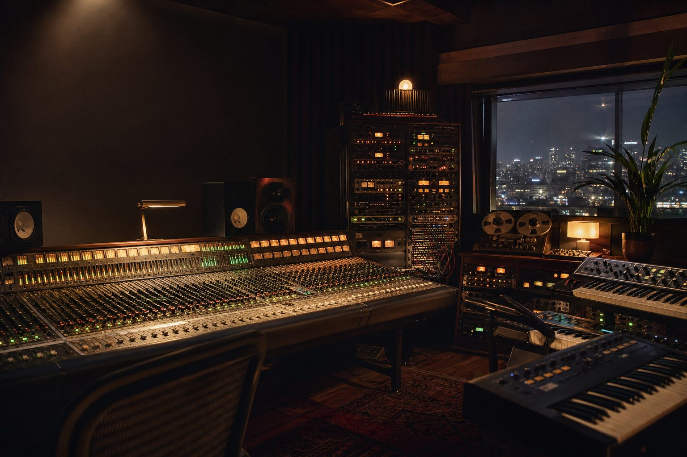
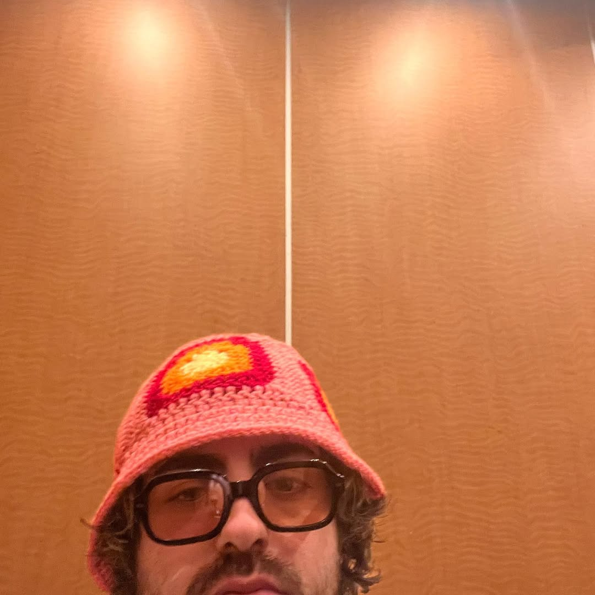

now showing
12065
grentperez / 2025Producer

About the producer
Jack Kleinick
Los Angeles CA
writing / production / songs
Manzanita Lane
Jack Kleinick is a producer, multi-instrumentalist, and songwriter based in Los Angeles, CA. He is currently signed to Manzanita Lane, a joint venture between Kobalt Music and Jennifer Decilveo.
Jack has credits with a variety of artists including grentperez, LAUREL, Theo Kandel, Evan Honer, Wingtip, Juliet Ivy, and Gigi Perez. He has also contributed music to projects with Kate Spade, MARS Inc, Ashlynn NYC, Fox Entertainment, and MGA Entertainment. Upcoming releases include songs with Faye Meana, Mia Wray, Kaeto, Juliet Ivy, and girli.
selected collaborators
grentperez / LAUREL / Theo Kandel / Wingtip / Juliet Ivy / Gigi Perez
music for
Kate Spade / MARS Inc / Ashlynn NYC / Fox Entertainment / MGA Entertainment